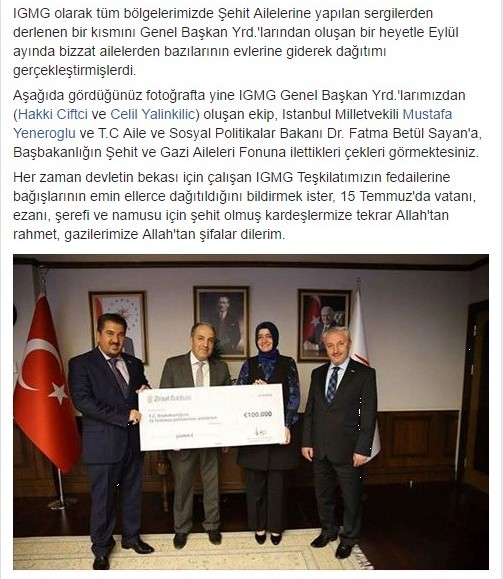
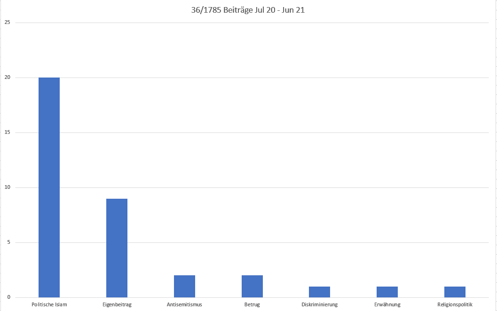
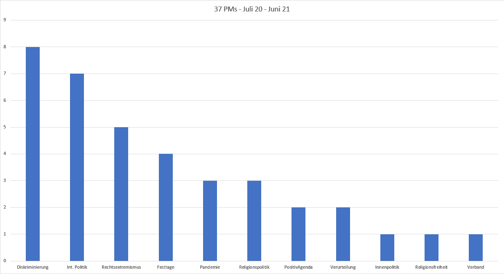

Gurbeti Vatan Edinebilmek?
İslam Toplumu Milli Görüş (IGMG) içindeki yerleşiklik ve yabancı kalma arasındaki mücadele
“İslamcılık’tan Sonra” Durum Değerlendirmesi
Müslüman cemaatlerin iç yaşamı, Almanya’daki Müslüman yaşamının az araştırılmış alanlarından biridir. Bunun pek çok nedeni vardır. Bir yandan, cemaatlerdeki pek de göze çarpmayan gündelik hayata yönelik bir ilgi eksikliği söz konusuyken, diğer yandan araştırmacılar için cemaatlerin iç dünyasına erişim pek de mümkün değil. Buna ek olarak, cemaatlerin kendileri de iç yaşamlarına dair kamuoyuna yalnızca bölük pörçük bilgiler sunmaktadır. Özellikle üst düzey yöneticilerin halen yaşadıkları ülkelerin diline hakim olmamaları da “dışarı” ile her irtibatın öncesinde bir tercüme çabasının olması gerekmesinden dolayı zahmetli ve kasvetli olarak algılanmakta.
Bu durum, bazı cemaatlerdeki tutum ve görüşlerin uzun bir zaman dilimindeki gelişiminin anlaşılabilir bir analizini yapmayı özellikle zorlaştırmaktadır. İslam Toplumu Milli Görüş’te (IGMG) yerleşiklik ve yabancı kalmak arasındaki tartışmalar için Werner Schiffauer’in “Nach dem Islamismus” (İslamcılığın Ardından) adlı kitabı bugünkü durumla bir karşılaştırma yapma imkânı veriyor. Schiffauer’in IGMG’de yaklaşık on yıl süren etnografik çalışması, IGMG’nin 2010’a kadarki durumunun anlaşılır bir dökümünü sunuyor.
Schiffauer çalışmasında IGMG içinde temel olarak üç akım tespit etmiştir: post-İslamcılar, aktivistler ve gelenekselciler (Schiffauer 2021:426). Schiffauer özellikle post-İslamcılara ağırlık vermiştir, zira bunlar arasında günümüzde ve burada konumlanma açısından en dikkate değer gelişmeyi görmüştür. Erbakan’a daha sadık olan gelenekselciler ile neo-Osmanlı ve güçlü Türkiye yönelimli genç aktivistlerin giderek daha az önemli hale geleceğini düşünmektedir.
Schiffauer, IGMG içindeki bir yönetici kuşağını, Almanya’da sosyalleşme sürecinden geçmiş, “Batı Alman demokrasisinin güçlü ve zayıf yanlarını deneyimlemiş ve […] bu topluma dair çeşitlenmiş ve gerçekçi bir bakış açısı edinmiş” post-İslamcılar olarak tanımlamıştır (Schiffauer 2021:436). Bunlar gelenekselcilerin siyasal İslamcı geleneğinden kopmuş (Schiffauer 2021:438) ve kendilerini neo-Osmanlı bakış açısına ve aktivistlerin özeleştirisiz Türkiye tasavvuruna karşı konumlandırmışlardır (Schiffauer 2021:423).
Post-İslamcılar bir noktaya kadar cemaat içindeki tartışmada kendilerini kabul ettirebilmişlerdir. Saadet Partisi ve Erbakan yanlıları, Schiffauer’in çalışmasının yayınlanmasından sadece birkaç yıl sonra IGMG’den ayrılarak “Saadet Almanya” adı altında kendi yapılarını oluşturdular. Post-İslamcılar da IGMG’de Erbakan’la olan mücadelede üstünlüğü ele geçirmiş görünüyorlardı.
Post-İslamcılar 2010 yılında hala büyük ölçüde gelenekselcilere ve aktivistlere karşı kendilerini üstün bir şekilde savunabilirlerken, Mısır’daki Ezher Üniversitesi’nde eğitim gören imamlar grubundan gelen ek direniş, o zamanki Yönetim Kurulu’nun ve özellikle Genel Sekreterliğin post-İslamcı çizgisine karşı hissedilir hale geldi. Bunlar kendilerini pragmatik olarak gelenekselciler ile aktivistler arasında konumlandırmış ve post-İslamcıların Almanya veya Avrupa sosyalleşmesinden çok fazla etkilendiklerini düşünüyorlardı. Bu itiraz, daha sonraki bir Genel Başkan Yardımcısı tarafından kaleme alınan ve “hukukçuların örgüt üzerindeki tahakkümünün kırılması” talebiyle kaleme alınan bir raporda açıkça ortaya konmuştur. “Hukukçular” ile Schiffauer’in post-İslamcı olarak tanımladığı aktörler kastedilmektedir.
2011’de Yönetim ve Tutum Değişimi
2011’de yönetim kurulu ve tutum değişikliği Post-İslamcılar, Schiffauer’in “İslamcılığın Ardından” kitabının yayınlandığı dönemde Necmettin Erbakan’ın karizmasına karşı başarılı bir şekilde direnmiş olabilirler, ancak onun ölümüyle birlikte kaybettiler. Şubat 2011’de Erbakan ölüm döşeğindeyken Kemal Ergün’ü IGMG’nin yeni genel başkanı olarak atar. Post-İslamcılar, özellikle bölge teşkilatlarındaki pek çok görevli tarafından hala manevi lider olarak görülen Erbakan’ın son arzusuyla artık mücadele edemezler. Kemal Ergün Genel Başkan adayı olarak Türkiye’den döner ve bir sonraki IGMG Genel Kurulunda Erbakan’ın varisi olarak Genel Başkan seçilir.
Ergün’ün görev süresi boyunca Saadet Partisi çizgisini birebir takip ettiği söylenemez. Daha ziyade, hem AKP hem de Saadet Partisi arasında bir denge kurmaya çalışıyor. “Denge ve birlik” onun döneminin en önemli iki sloganı olacaktır. Daha önce yöneticilik kademelerinden ayrılmak zorunda kalan Saadet taraftarları cemaate geri dönmektedir; ancak cemiyetlerde AKP taraftarları üye düzeyinde çoğunluktadır. Yeni Yönetim Kurulu’nun post-İslamcılarla ilişkisi ve işbirliği zor oluyor. Post-İslamcıların din özgürlüğü ve sivil haklar temelinde topluma ve siyasete yönelik iddiaları (Schiffauer 2021:438) yeni liderlik tarafından “kendi profilini yükseltmek için devletle kavga” olarak görülmekte ve hoş karşılanmamaktadır; iç örgütlenmeye ve İslamcı aktivist pozisyonlara yönelik eleştiri kişisel saldırı olarak algılanmaktadır. İlerleyen yıllarda IGMG’nin çeşitli kademelerindeki post-İslamcılar büyük ölçüde Genel Merkez’deki, Bölge Teşkilatları’ndaki ve son olarak da Cemiyetlerdeki görevlerinden ayrılmaya zorlanırlar ya da kendi istekleriyle bireysel yaşamlarına çekilirler.
Ergün’ün camiadaki denge ve birlik ihtiyacı, IGMG Yönetim Kurulu’nun kamuoyuna yönelik, açık ve net konumlanmasının büyük ölçüde eksik olmasına yol açıyor. Her konumlandırma, IGMG içindeki akımlardan birinin veya diğerinin bunu ihtilaf çıkarmak olarak algılaması tehlikesini taşır. Öte yandan bir önceki yönetim kurulunun Saadet Almanya hareketinde aktif olmanın IGMG’de görev almakla bağdaşmadığı yönündeki açıklaması da artık uygulanmıyor.
Buna ek olarak, " köken ülke referansı" IGMG’nin kendi kimliğinin merkezine daha güçlü bir şekilde yerleşiyor. Geçmişte cemaat, Türkiye’deki dini otorite olan Diyanet’i laik bir devletin İslam’ı kötüye kullanması olarak reddederken, bu yeni dönemde, IGMG’nin kuruluşundan bu yana ilk kez Diyanet tarafından gönderilen imamlar cemiyetlerde görev alıyor. IGMG’nin eğitim kurumları veya IGMG’ye yakın kurumlar, kendi mezunlarına TC Milli Eğitim Bakanlığı’nın onayıyla İmam Hatip diploması verebilmek için kendilerini Türkiye’deki müfredata tabi kılıyorlar.
Bunun yanı sıra IGMG Türkiye’de de kurumsallaşmasına hız veriyor: IGMG’nin sosyal hizmet kurumu olan Hasene’nin bağımsızlaştırılan Türkiye şubesinden, yeni kurulan vakıf ve şirketlere kadar.
Kamuoyundaki Algının Azalması
IGMG’nin zirvesindeki bu gelişmeler sadece farklı akımlar arasındaki ilişkiyi etkilemekle kalmıyor, aynı zamanda topluluğun kamuoyundaki algısında ve görünümünde de kendini gösteriyor.
Post İslamcılık konumlandırması “yeni” yönetim kurulu tarafından fazla “Alman” ve “çatışma odaklı” olduğu gerekçesiyle kabul edilmedi. Saadet Partisi ve AKP’ye içerde siyasi faaliyet yürütme imkânı tanınmadı, ancak bu partilerde aktif görev alma ve IGMG teşkilatlarında görev almaya ilişkin mevcut uyumsuzluk düzenlemeleri fiilen ortadan kalktı. Daha önce “Saadet Almanya” bünyesine geçmiş olan yöneticiler IGMG içinde yeniden önemli görevler üstlenebildiler, ancak aynı zamanda Türkiye’deki AKP’nin gözüne girmenin yolları arandı.
 Ekim 2016’da TC Aile Bakanlığı Şehitler Fonuna yapılan bağış (soldan sağa: H. Çiftçi, IGMG Genel Bşk. Yrd.; M. Yeneroğlu, AKP-Milletveki, IGMG eski Genel Sekreteri; F. Kaya, TC Aile Bakanı; C. Yalınkılıç, IGMG Genel Bşk. Yrd.)
Dolayısıyla kamuoyu önüne çıkmak IGMG için bir mayın tarlasına dönüştü. Kamuoyuna yapılan her açıklama, IGMG çatısı altında şimdilik ahenk içinde yeniden bir araya gelen akımlardan birini rahatsız edebilirdi. Post-İslamcılar hariç, bu akımların kamuoyuna açıklama yapılmasını bekledikleri de pek söylenemez. Almanca konuşan kamuoyuna yönelik duyurular, ancak Türkçe çevirileri de mevcutsa dikkate ve ciddiye alınıyordu. Post-İslamcılardan gelen eleştiriler nadiren Yönetim Kurulu’na ulaşabiliyordu.
Sonuç olarak, IGMG Almanca kamuoyundaki tartışmalardan büyük ölçüde çekildi. Kurum içindeki söylem ile kamuoyuna yönelik söylem arasındaki uçurum genişledi.
Teşkilatın 15 Temmuz 2020’den 15 Haziran 2021’e kadar Almanca basın açıklamaları ve teşkilat hakkında medyada yer alan haberler değerlendirildiğinde, teşkilat içi kamuoyu ile dış kamuoyu arasındaki uçurum net bir şekilde ortaya çıkmaktadır.
 15.07.2020 ve 15.07.2021 tarihleri arasında İslam konulu 1785 makalenin 36 defa IGMG geçmekte
Medyada IGMG hakkında çıkan haberlerin azlığı dikkat çekicidir. “Almanya’da İslam ve Müslümanlar” konusunda internette bulabileceğiniz 1785 yazı arasında sadece 36 yazıda IGMG’den bahsediliyor. Bunlardan dokuzu IGMG’nin kendi yayınlarındandır. Makalelerin 20’sinde kurumdan “siyasal İslam” tartışmaları bağlamında bahsedilmektedir. İkisi antisemitizm ve dolandırıcılık, birer tanesi de ayrımcılık ve din politikası konularını ele almaktadır. Sadece bir kez olumlu bir bağlamda IGMG’den bahsedilmiştir.
 Temmuz 2020 - Temmuz 2021 arası IGMG Basın Açıklamaları
IGMG’nin bu süre zarfında yayınlanan basın açıklamalarında ise karşımıza tamamen farklı bir dünya çıkmakta. Açıklamaların 8’i ayrımcılık konularını ele almakta, bir açıklama Hanau saldırısını, bir taneside basının IGMG’ye bakışını değerlendirmekte. Geri kalan 7 açıkla “uluslararası siyaset” alanında sayabileceğimiz göç konularına değlnmekte. Bunların dışında ele alınan diğer konular şunlar: Aşırı sağcılık (5 açıklama), dini bayramlar (4 açıklama), Corona (3 açıklama) din siyaseti (3 açıklama), terör saldırılarının tahkiri (2 açıklama) ve birer açıklamayla iç siyaset, din özgürlüğü ve Teşkilat’taki gelişmeler. Tüm bu açıklamalar arasından sadece ikisi gündemi belirleme ve yönlendirme amaçlı bir deneme olarak değerlendirilebilir.
IGMG’nin aynı dönemdeki Almanca basın açıklamalarında ise bambaşka bir dünyaya rastlamak mümkün. Yazılardan sekizi ayrımcılık konusunu ele alırken, beşi mahkeme kararları veya devam eden ya da tamamlanmış somut yasal süreçler hakkında yorum niteliğinde, bir yazı Hanau’daki saldırıyı, bir diğeri ise medyanın IGMG’ye yaklaşımını ele alıyor. Yedi metin “uluslararası politika” tematik alanında sınıflandırılabilir ve neredeyse her seferinde uluslararası düzeyde göç, Uygurlar ve bir kez de Rohingya ile ilgilenmektedir. Bunların dışında ele alınan diğer konular şunlar: : Aşırı sağcılık (5 yazı), dini bayramlar (4), Korona salgını (3), din siyaseti (3), saldırı kınaması (2) ve iç siyaset (1), din özgürlüğü (1) ve dernekteki gelişmeler (1). Sadece iki yazı olumlu gündem belirleme, kendi konularını olumlu bir şekilde ele alma olarak değerlendirilebilir. Medyada yer alan IGMG hakkındaki haberler ile IGMG’nin açıklamaları birbirini tutmuyor. Dernek, kamuoyunda nasıl tasvir edildiğini algılamıyor gibi görünüyor. Kurum ayrıca kendi alternatif tanıtımlarını da gerçekleştirmiyor. IGMG’nin basın açıklamalarından IGMG’nin ne olduğu ve ne yaptığı öğrenilemiyor. 37 basın açıklamasından yalnızca ikisi, yürütülen çalışmaları topluma olumlu ve genel bir katkı olarak kamuoyu ile paylaşmaya teşebbüs etmektedir: Açıklamalardan biri Dünya Su Günü’nde camilerdeki su tüketiminin azaltılmasını ele alırken, ikinci bir basın açıklaması Açık Cami Günü’nü teşvik etmektedir.
Mevcut tartışmalara ilişkin pozisyonlar ve hatta kendi söylemlerinin başlatılması yönünde bir arayış yok. Din politikasına ilişkin üç açıklama dahi sadece Almanya’daki Müslüman yaşamına ilişkin yayınlanmış bir araştırmayı, Hessen’deki İslam din dersine ilişkin bir kararı ve okul kitaplarında dini ve kültürel çeşitliliğe ilişkin (pek de yeni olmayan) talebi ele alıyor. IGMG’nin Almanca konuşulan dünyada ayrımcılık, aşırı sağcılık ve din politikası ve özgürlüğü ile ilgili az sayıdaki sınırlı çalışmalar dışındaki gelişmelerden haberdar olup olmadığını basın açıklamalarından öğrenemiyoruz.
IGMG ve Kendi İçindeki Farklılıklar
IGMG ve sosyolojik selefleri hiç bir zaman homojen bir yapı olmadılar. Cemiyetler arasındaki farkların yanı sıra tutum ve mentalite açısından da teşkilat içinde büyük farklar mevcuttu. 2011 yılındaki yönetim değişikliği ile Türkiye’ye bakış açısı temel bir ayırıcı unsur olarak ortaya çıktı. Buna dayanarak, 2011 sonrası dönem için, ilk ikisi birbiriyle çatışma halinde olan dört akım tanımlanabilir:
- Sayıları giderek azalan post-İslamcı yöneticiler
- Köken ülke odaklı yöneticiler
- Çoğunluk toplumuna bir köprü olarak “Dış İlişkiler” personeli
- “Sıradan” cemaat üyesi
„Post-İslamcı“ Yöneticiler
Durum değerlendirmesinde, farklı kademelerdeki ( cemiyetler, bölge dernekleri, Genel Merkez) post-İslamcı görevlilerin yeni liderlik tarafından fazla “Almanlaşmış” olarak algılandığı zaten belirtilmişti. Teşkilata yönelik sürekli özeleştiri yapılması ve gelişmelerin sorgulanması, yönetim kurulunun liderlik iddiasına yönelik bir saldırı olarak görülmüştür. Bu arada, Kemal Ergün’ün Mısır Ezher Üniversitesi’nde birlikte okuduğu ve kendisi gibi kariyerlerine cami imamı olarak başlayan üniversite arkadaşları teşkilatın yönetimini devralmışlardı. Birçok yeni Bölge Başkanı da bu havuzdan çıktı. Post-İslamcıların “tahakkümünün kırılması” böylece cemiyet düzeyine kadar taşındı.
Post-İslamcılar, genel teşkilatın uyum hedefi bağlamında, teşkilattaki yıkıcı unsur olarak görülüyorlardı. Onlara karşı tekrarlanan bir itham, fitneye varan “huzursuzluğun”, yani anlaşmazlığın cemaate taşınmasıydı. Bu tepkilerin çeşitli kademelerdeki sonucu, çok sayıda post-İslamcı aktörün kendi bireysel alanlarına çekilmesi ve IGMG’deki görevlerinden istifa etmeleri oldu.
Köken Ülke Odaklı Yöneticiler
Köken ülke odaklı yöneticilerin arasında birleştirici unsur, Türkiye’deki gelişme ve yapılara yönelmeleri ve Türkiye’deki lider figürleri ve kurumlar ile kendilerini özdeşleşmeleriydi. Bu bağlamda, yönelimin AKP’ye ya da Saadet Partisi’ne doğru olması, en azından post-İslamcılardan farklılaşma açısından bir fark teşkil etmemektedir. Cemiyetlerdeki üyeler AKP’ye daha meyilliyken, bölgedeki yöneticilerde Saadet Partisi destekçilerine daha sık rastlanmaktadır. Bunun, Saadet taraftarlarının daha önce post-İslamcıları protesto etmek ve onları Erbakan’ın davasına ihanet etmekle suçlamak için terk ettikleri IGMG yapılarına geri dönmeleriyle de ilgisi olduğu kesin.
Bu idareci profilinin kimliklerinin temelinde Türkiye’ye yöneliş bulunmakta. Görüşlerin ve duruşların meşruiyeti, büyük ölçüde kişiselleştirilmiş, yani bir liderin şahsında yoğunlaşmış olan kapsamlı bir ulusal kimlikten türetilebilir olmalarında görülmektedir. Cemaatin ve cemaat içindeki çalışmaların bu standarda göre ölçülmesi gerekir; özgünlük ise köken ülkeyle ilgili referans alınan grubun kodlarını yeniden üretebilme becerisiyle bağlantılıdır.
“Devletle tartışılmaz” ilkesinde dahi köken ülkenin öncelenmesi söz konusudur. Ülkeler arasındaki çıkar çatışmalarında daima çıkarları gözetilen Türkiye ve oradaki aktörlerdir. Almanya bağlamında kurumsal çıkarların göz edilmesi sözkonusu iken, Türkiye bağlamında kişisel çıkarların ve geleceğe yönelik beklentilerin göz önünde bulundurulması önem taşımaktadır. Son yıllarda Türkiye’de IGMG yönetimi tarafından değişik şirketlerin kurulması ve maddi olarak güçlendirilmesinin temelinde de şahsi geleceğin teminat altında alınması yatıyor. Türkiye’de bir gelecek fırsatı bazı yetkililer için şimdiden gerçekleşmiş durumda. Kurulan bu yapı ve şirketlerin kurumsal olarak IGMG’den bağımsız olarak oluşturulmuş ve mevcut yönetim tarafından emin kişiler olarak değerlendirilen kişiler tarafından yönetiliyor olması Türkiye’de şahsi bir gelecek oluşturma hayalini, gelecekte IGMG’de dümene kimin geçeceği sorusundan da bağımsız bir perspektif sunuyor.
Çoğunluk Toplumuna Köprü Olarak „Dış İlişkiler“-Sorumluları
„Dış İlişkiler” ve Tanıtma birimlerinde geleneksel olarak Teşkilat ile “dış dünya” arasında irtibatı kuran bölge ve şubelerdeki birimler bulunmakta. Teşkilat hiyerarşisi içinde Genel Sekreterliğe bağlıdırlar. Belki de bu alandaki çalışmalar nedeniyle teşkilattaki pek çok post-İslamcı kariyerinde dış ilişkilerden geçmiş ya da yolunu bu alanda keşfetmiştir. Ancak bu alanda kalmayıp zaman içinde çeşitli başka görevler de üstlendiler. Bu durum 2011’deki yönetim kurulu değişikliğinden sonraki yıllarda değişti. “Dış İlişkiler” alanı ilk olarak dernek hiyerarşisinde birçok post-İslamcı için halen müsamaha gösterilen ve ihtiyaç duyulan bir geri çekilme yeri haline geldi. Ancak birçokları için “Dış İlişkiler” alanı aynı zamanda çıkışın da noktasıydı, çünkü köken ülke odaklı görevlilerle işbirliği özellikle dış ilişkiler alanında çatışmalara ve “huzursuzluklara” neden oluyordu.
Artık bu makamlarda da büyük ölçüde köken ülke merkezli olanlara yakınlık duyan ya da en azından bu konumlanma ile fazla ilgilenmeyen ve bu nedenle herhangi bir iç tartışmaya yol açamayan yöneticiler görev yapmaktadır. Bunlar genellikle çeşitli idare kademelerinde kalan az sayıdaki Almanca konuşan kişilerdir. Geçen zamana rağmen, garip bir şekilde, Teşkilat çoğunluk toplumuyla ve ayrıca Türkiye kökenli olmayan diğer Müslüman derneklerle karşılıklı iletişim kurma yeteneğini kaybetmiştir.
Bu alandaki mevcut görevlilere, herhangi bir yetkileri olmaksızın sadece dil açısından bir aracılık rolü verilmiştir. Tercümanlık yapmaları beklenir, ancak ne derneğin iç işleyişini dış dünyaya iletirler ne de çoğunluk toplumunun sorunlarını ve beklentilerini derneğe taşırlar.
“Sıradan” Cemaat Üyesi
Cemaatin " sıradan" üyesi bu tür tartışmalardan büyük ölçüde etkilenmemektedir. Camilere gidenlerin büyük çoğunluğu camiyi bireysel ve toplumsal dini ihtiyaçların asgari düzeyde karşılanması için bir altyapı olarak kullanmaktadır. Camide Cuma ve bayram namazları kılınıyor, belki haftada bir kez dini vaaz veriliyor ve çocuklar din derslerine gönderiliyor. Dinî bağlılık bir derneğe değil, doğrudan yerel camiye kurulur. Daha iyi bir imam, daha iyi bir din eğitimi ve aynı zamanda daha iyi bir bina altyapısı ile cami cemaatinin değişmesi nadir bir durum değil, aksine cami yöneticileri tarafından korkulan bir durumdur.
Güncel Gelişmeler
Post-İslamcıların geri çekilmesi ve köken ülke odaklı grupların yeniden güç kazanması, IGMG’nin Almanya’daki çalışmalarını ciddi bir şekilde etkiledi. IGMG, din politikası alanları da dahil olmak üzere kamuoyu tartışmalarından büyük ölçüde çekildi. Werner Schiffauer’in anlattığı yıllarda, Anayasayı Koruma Dairesi’nin kurum hakkındaki raporlarına rağmen içerik ve pozisyonlarıyla sesini duyurabilirken, bugün Anayasayı Koruma Dairesi sorununun büyük ölçüde ortadan kalkmasına rağmen bu tür pozisyonlar ya hiç yok ya da fark edilemiyor.
Müslümanların burada, şimdi ve gelecekte konumlandırılmasına ilişkin fikir ve kavramların geliştirilmesi eksik kalmaktadır. Başkan Ergün kamuoyuna yaptığı açıklamalarda sık sık Türkçe olarak “buralıyız” diyebilir, ancak yönetimin Türkiye’deki kişisel-zihinsel konumlanışı, buradaki yaşam için faydalı fikirler geliştirilmesine pek olanak tanımıyor.
Bu tutum, cemiyetlerin bulundukları yerel bağlamlardaki konumlarını da etkilemektedir. “Birlikte yaşamaya dair sorunlar” söz konusu olduğunda, Merkez ve bölgelerdeki kurumların cemiyetlere içerik ve tavır alma konusunda destek sunmaları pek mümkün değildir. Cemiyetler giderek daha sık olarak, kendilerine dışarıdan sunulanları eleştirmeksizin kabul etme ya da yerel, özellikle de sosyal ortamlardan çekilme alternatifiyle karşı karşıya kalmaktadır.
Çevrenin beklentileri ve cemiyetin ihtiyaçları hakkında tartışma imkanı dernek içi ortamda hemen hemen hiç yoktur. Post-İslamcıların ayrılmasıyla birlikte IGMG, iç ve dış alanda esas çalışmaları yürütecek personelini de büyük ölçüde kaybetti.
Sonuç olarak, cemiyetler ancak çekingen bir şekilde dışa dönük faaliyet gösterebilirler. Kendi içlerinde de, cemiyetin üyelerine karşı toplumsal bir arada yaşama sorunlarına ilişkin tutumlar geliştiremezler.
Teşkilat için bu durumda geriye kalan tek seçenek, büyük ölçüde azalan toplumsal iddiayla birlikte temel dini hizmetlerine çekilmektir. Özellikle de gençlik çalışmaları veya insani yardım gibi mevcut sosyal çalışmaların bile köken ülke odaklı bir biçimde uygulandığı düşünüldüğünde.
Gelişmelerin Cemiyetler İle Yürütülecek Ortak Çalışmalara Etkisi
Buradalık ve şimdilik perspektifine ve iddiasına sahip bir kuşak yöneticinin tamamen ortadan kalkmış olması, IGMG camiasının diğer sivil toplum ve devlet aktörleriyle iletişim kurmasını zorlaştırıyor. Derneğin bütünü gibi, cemiyetler de kendi konumlarını, taleplerini ve ihtiyaçlarını kendi kurum sınırlarının ötesinde anlaşılabilecek bir biçimde ifade etmekte zorlanıyorlar.
IGMG için tehlike, teşkilatın İslamcılar tarafından ele geçirilmesi ve bundan dolayı terkar Anayasayı Koruma Teşkilatı’nın raporlarına girmesinde yatmamaktadır. Daha çok, toplumdaki yerel gelişmelerle bir bütün olarak ilgilenmeyen ve köken ülkelerine odaklanan görevliler göreve getiriliyor olmaları bir tehdit unsuru haline geldi. Bu durum, teşkilatı sadece bugün itibariyle iflas ettiği düşünülen post-İslamcılar için değil, aynı zamanda kendilerini Türkiye’deki bir sosyal veya siyasi gruba mensup olmakla tanımlamak istemeyen muhtemel yeni ve genç kadrolar için de cazip olmaktan çıkarmaktadır.
Bir bütün olarak toplum açısından bakıldığında, cemiyetlerle ilişkilerde karşılaşılan zorluk, bu cemiyetlere yaklaşılmaması ve temas kurulmaması durumunda, köken ülke odaklı olan ve toplumla birlikte yaşamak istemeyen kişilerin daha da güçlenecek olmalarıdır. Bunlar yerel toplumu reddetme eğilimlerinde teyid edilmiş olacaklar. Onlara göre, etnopluralizme oldukça benzeyen Batı ile kültürel uyumsuzluk tezleri pratikte böylece doğrulanmış olacaktır. Öte yandan coğunluk toplumunun, cemiyetlere ciddi bir şekilde yaklaşması ve onları “başlarından savmaması”, bu aktörlerin cemiyet içi bağlamdaki güçsüzlüğünü ve vizyonsuzluğunu da ortaya çıkaracaktır.
Kaynak Werner Schiffauer: İslamcılığın Ardından - İslam Toplumu Millî Görüş Etnografik Bir Araştırma, çev. Ogün Duman, İstanbul 2021